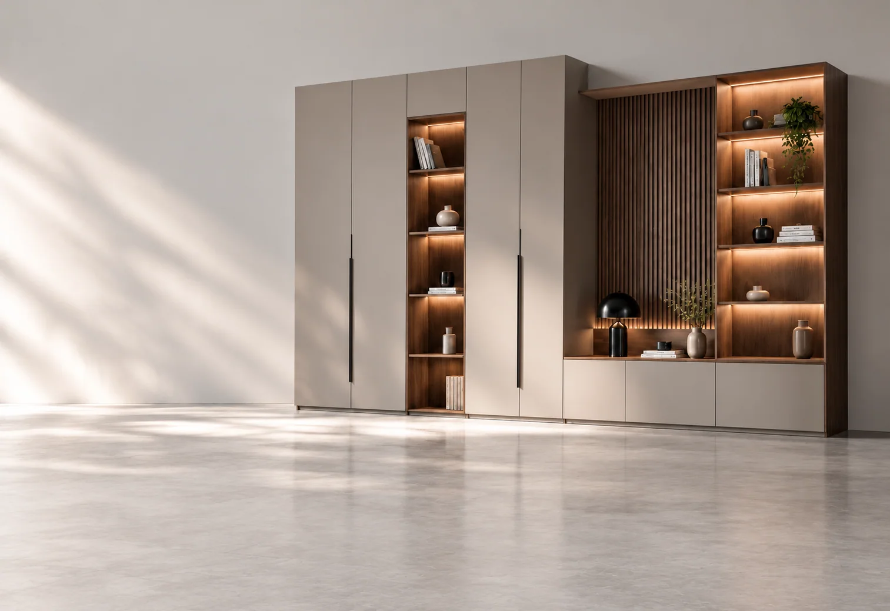
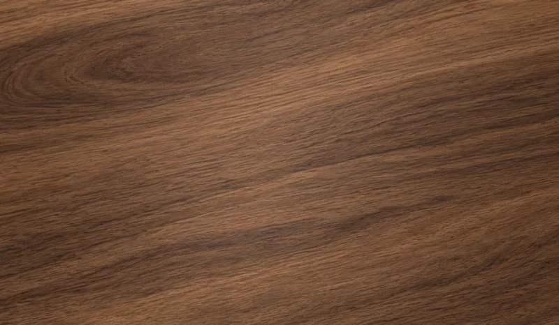
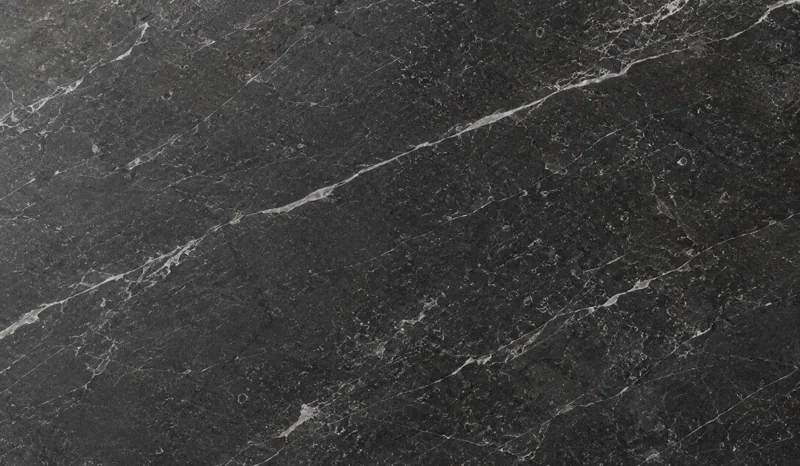
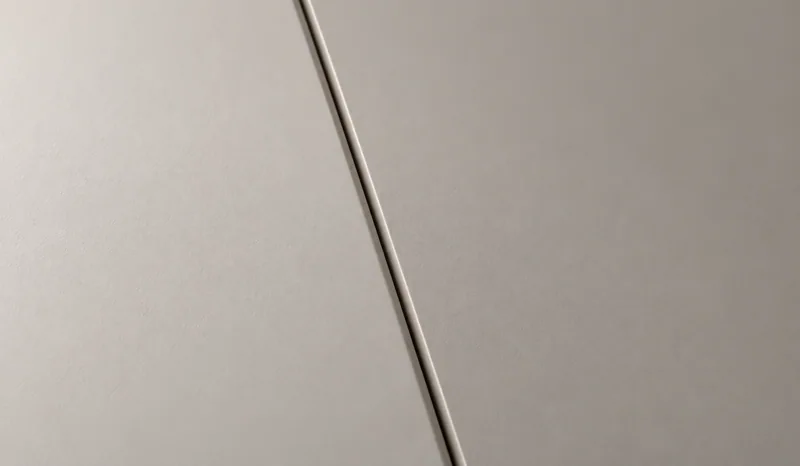

Мебель по индивидуальному проекту
Кухни, шкафы и гардеробные по размерам вашего дома.
Рассмотреть отделкуМатериалы

Фактура дерева
Рисунок волокон меняется от панели к панели. Подберите тёплый тон для кухни или встроенного шкафа.

Каменные поверхности
Крупный рисунок и контрастные прожилки задают характер рабочей поверхности.

Гладкие фасады
Спокойный оттенок и ровные стыки объединяют шкафы в одну плоскость.